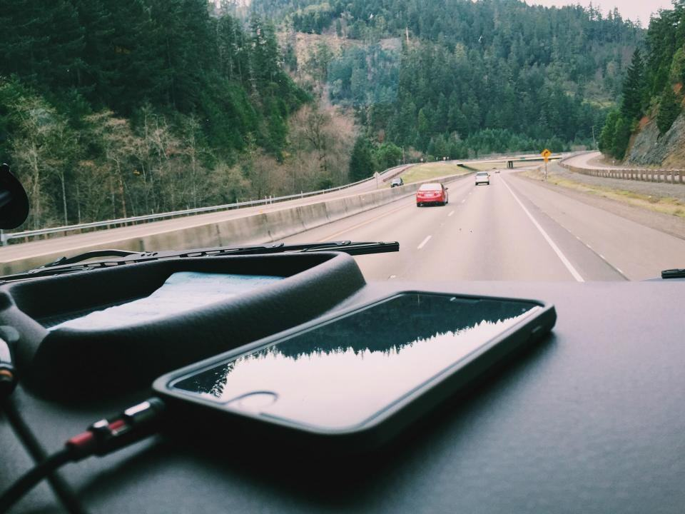

Var står du i dag?
Från ditt språk till körprovet
- 01
Samtal på ditt språk
Vi går igenom vad du redan kan, om du har körkort från ett annat land och vad som behövs för körkortstillstånd.
- 02
Teori och ordlista
Teorikvällar på ditt språk och ordlistan i appen, parallellt med lektionerna.
- 03
Körlektioner
Mer svenska för varje lektion, tills du förstår instruktionerna du får på körprovet.
- 04
Prov hos Trafikverket
Vi bokar kunskapsprov på ditt språk eller med tolk, och körprovet med skolans bil.
Arbetsgivare som har anlitat oss
- 01 / 06PågåendeBurlöv · B-körkort, grupp
Burlövs kommun, hemtjänsten
Arton undersköterskor tar körkort på arbetstid, med teori på fyra språk.
 02 / 06UtförtMalmö · Körkortsprojekt
02 / 06UtförtMalmö · KörkortsprojektMalmö stad, arbetsmarknad
Fyrtio deltagare i etableringsprogram fick körkort inom ett år.
 03 / 06UtförtMalmö · Utländskt körkort
03 / 06UtförtMalmö · Utländskt körkortÖresunds Budbilar
Fjorton bud med körkort från länder utanför EU fick svenskt körkort.
 04 / 06UtförtMalmö · Handledarkurs
04 / 06UtförtMalmö · HandledarkursFosie Vård
Handledarkurs på arabiska och somaliska för anställda och deras familjer.

05 / 06UtförtLund · TeoriSFI-kurs i trafiksvenska
Tio veckors trafiksvenska för vuxenutbildningen i Lund.
 06 / 06UtförtMalmö · Förberedelse taxi
06 / 06UtförtMalmö · Förberedelse taxiHyllie Taxi
Körträning för förare inför taxiförarlegitimationens körprov.


Du ska förstå varför, inte bara vad
Den som har lärt sig reglerna utantill på ett språk de inte förstår kör sämre när något oväntat händer. Därför förklarar vi på ditt språk och testar på svenska, och varje elev gör en provlektion helt på svenska före körprovet.
- 0111språk i undervisningen
- 02100 %provlektioner på svenska
- 03300trafikord i ordlistan
Senaste från Språkbron


Om språk, prov och utländska körkort
Hittar du inte svaret? Ring eller mejla oss.
01Kan jag göra kunskapsprovet på mitt språk?
Trafikverket erbjuder kunskapsprovet på flera språk och med tolk för andra språk. Vi hjälper dig att boka rätt variant.
02Gäller mitt utländska körkort i Sverige?
Körkort från EU- och EES-länder gäller. Från andra länder gäller körkortet oftast ett år efter att du blivit folkbokförd, sedan behöver du ett svenskt.
03Behöver jag många lektioner om jag redan kan köra?
Ofta 5–10 lektioner för att lära sig svenska regler, högerregeln och hur körprovet går till. Vi börjar med en bedömningslektion.
04Görs körprovet på svenska?
Instruktionerna ges på svenska eller engelska, men du kan ansöka om tolk. Vi tränar de vanligaste instruktionerna på svenska.
05Kan jag betala lektionerna i delar?
Ja, paket kan delas upp på upp till sex månader utan avgift.
06Finns kvinnliga lärare?
Ja, nio av våra lärare är kvinnor och talar sammanlagt sju språk. Säg till när du bokar.